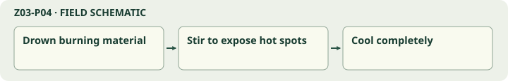

Z03-P04 · Fire and ignition · New manuscript
Put a campfire completely out
Detect and eliminate hot material before anyone leaves a campfire.
When it applies · A small attended campfire in an authorized ring or site. A spreading fire is a different emergency.
Equipment · Water and a stirring tool.

Actions
- Add water until active burning stops. Stir ash and embers to expose hot material.[C04]
- Add more water as needed and check for remaining heat. Allow the material to cool completely before departing.[C04]
- Keep someone at the site until the final check passes. Coal can remain hot after visible flame disappears.[C04]
Verify · No heat remains when checked safely without touching suspected embers.[C04, ED]
Stop or change course · If a fire escapes your control, move to safety and call emergency services.[T01, T02, ED]
Evidence and editorial notes
- C04 · USDA Forest Service / Smokey Bear · Smokey Bear’s Campfire Safety Guide (agency PDF)
- Section: Maintain and extinguish a campfire · Conditions: Occupied campfire, water and tools available
Support: Stay with the fire. Drown, stir and add water again until cool. Leaving visible embers or merely covering them is unsafe.
Limitations: Deep duff or peat soils can hold smoldering embers underground even after surface ash cools. · Conflicting evidence: None; prohibits dirt-only burial as primary extinguishment.
Editorial note: Enforces drown-stir-feel-cold cycle before site departure. · Specialist reviewer: Fire prevention and land management
Primary source · checked 2026-11-24 - T01 · American Red Cross · First Aid Steps (current web edition)
- Section: First Aid Steps > Check the scene; check the person · Conditions: Lay responder in United States; assess safety before contact
Support: Check scene safety, responsiveness, breathing and immediately life-threatening conditions.
Limitations: Lay guidance does not replace advanced clinical or rescue protocols. · Conflicting evidence: None; universal first-response opening gate.
Editorial note: Anchors scene-safety-first rule across Z01. · Specialist reviewer: EMS and wilderness medicine
Primary source · checked 2026-11-24 - T02 · American Red Cross · First Aid Steps (current web edition)
- Section: First Aid Steps > Call 9-1-1 · Conditions: Lay emergency response to unresponsiveness, abnormal breathing or severe bleeding
Support: Activate EMS and get needed equipment. Follow dispatcher directions and act within training.
Limitations: Remote locations may delay EMS arrival, requiring sustained stabilization after activation. · Conflicting evidence: None; aligns with NPS-E.
Editorial note: Mandates early emergency activation and dispatcher adherence. · Specialist reviewer: EMS and wilderness medicine
Primary source · checked 2026-11-24
Source lineage · Smokey Bear campfire guide; new manuscript · Classification · New manuscript.